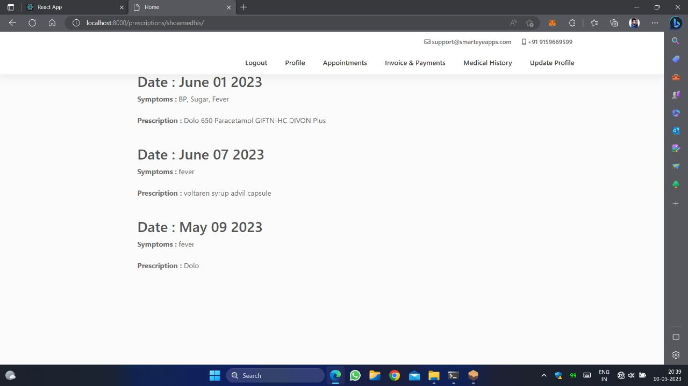
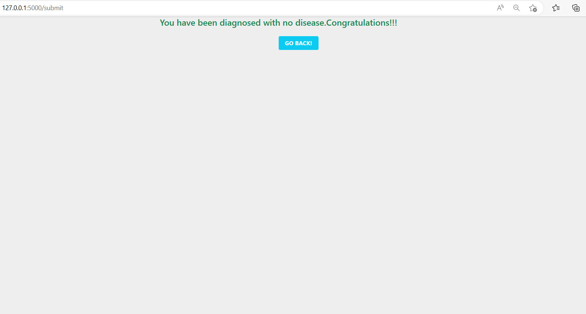
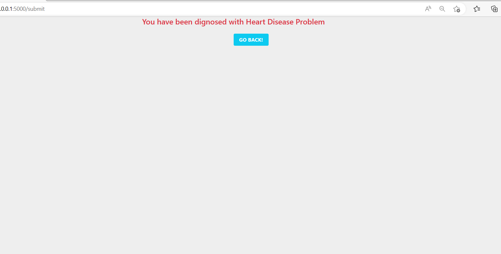
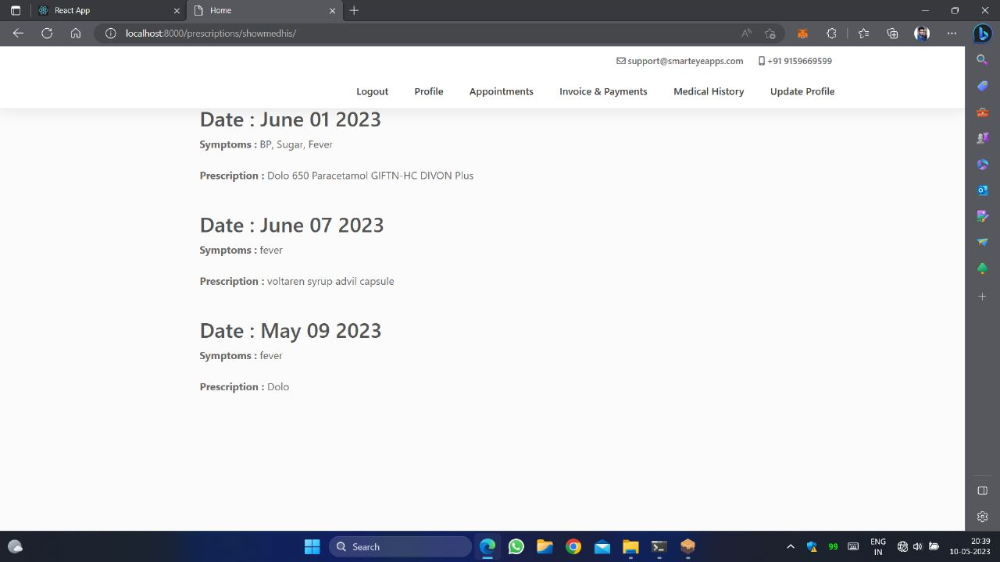
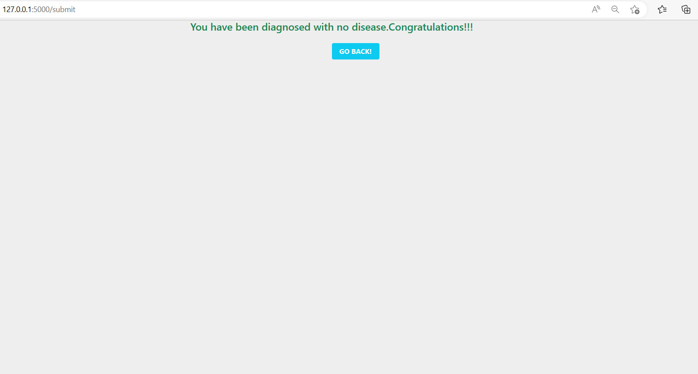
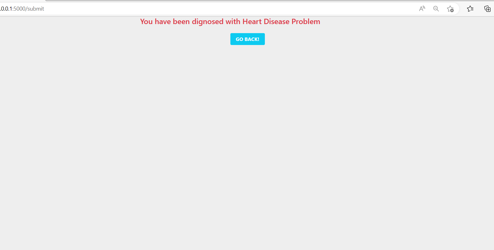

Heart Diseases Prediction
This project aims to detect heart diseases from patient data, including age, weakness, diabetes, high blood pressure, platelets, serum creatinine, and other relevant health indicators. A machine learning model (Linear Regression) was built with 1000 training features to achieve accurate predictions. Comprehensive Data Analysis: Analyze various patient health indicators to identify patterns and correlations that can predict heart disease. Machine Learning Model: Develop and train a Linear Regression model using a robust dataset with 1000 features to ensure high accuracy. Feature Engineering: Carefully select and preprocess features to enhance the model's performance and reliability. Data Visualization: Utilize visualization tools to represent data insights and model performance clearly and effectively. Performance Metrics: Evaluate the model using appropriate metrics such as Mean Squared Error (MSE) and R-squared to ensure it meets the desired accuracy and reliability. Python Integration: Leverage Python's powerful libraries such as NumPy, Pandas, and Scikit-Learn for data manipulation, analysis, and model building. Interactive Environment: Use Jupyter Notebook to create an interactive environment for developing, testing, and documenting the machine learning model. Scalability: Design the model to be scalable and adaptable to include additional features or larger datasets in the future. Health Insights: Provide actionable health insights based on the model's predictions to support medical professionals in early detection and intervention. User-Friendly Interface: Develop a user-friendly interface for inputting patient data and viewing prediction results, making the tool accessible to healthcare providers. Secure Data Handling: Implement robust data handling practices to ensure patient data is processed securely and confidentially. Technology used: Python, Jupyter Notebook. Our heart disease detection project leverages the power of machine learning to provide a reliable and efficient tool for predicting heart disease, aiding healthcare professionals in making informed decisions and improving patient outcomes.
Technologies Used:
- 1. Python
- 2. Jupyter Notebook
Screenshot:
.jpg) 




